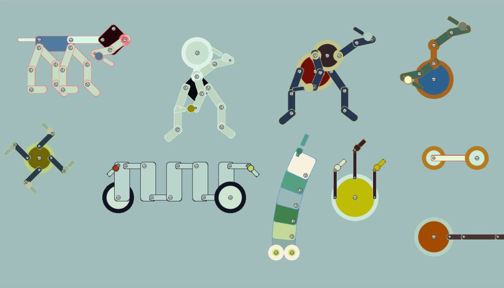

Paintingmachines
Paintingmachines is an interactive app created in Processing. You can create digital paintings with 10 different machines.
Every machine has is own way of painting depending on his structure and the way he moves.
When a machine has done his job, a trail will start that will follow the painted forms.
You can stop this trailing by clicking the SPACEBAR.
With a click on the screen you can come back to the paintingmachine selection page.
Select your favourite machine and start painting.
When your painting is ready, you can save it by clicking the S button.
The painting will download and you can print it on some nice photo-paper for a nice result.
Have fun painting!!
DOWNLOAD THE APP